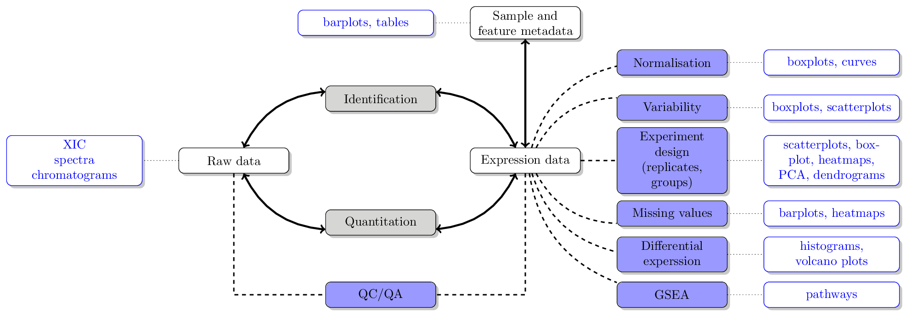

Chapter 3 Exploring and visualising biomolecular data
This chapter provides an overview of a typical omics data analysis, exploration of the data, statistical analysis and their associated visualisations. We will look into the respective figures and how to produce them in the later chapters.

Typical proteomics data processing and analysis workflow